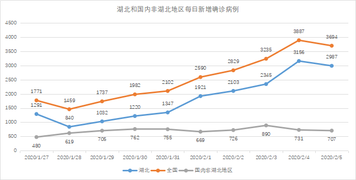
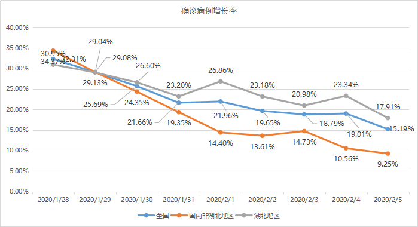
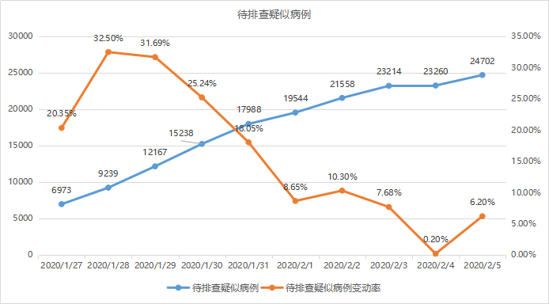
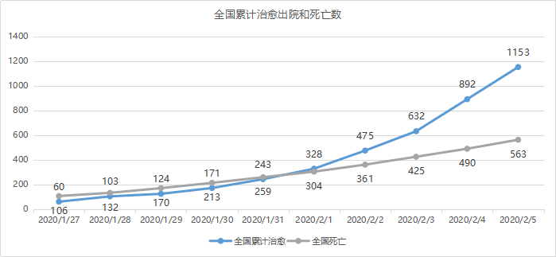
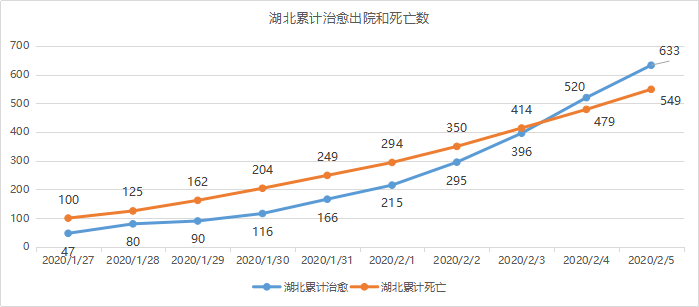

鄂外重灾区：国内多地重点管控“温州返回人员”
原文链接 备份链接 *************▲*************2020年1月31日，温州某商业街，店铺都关闭了。（南方周末记者 王华震/图） 全文共*3424*字，阅读大约需要8分钟。 截至2月4日12点，温州确诊新冠肺炎 …


图/法新
文 | 徐进
是的！好转迹象就藏在数据更新中。据国家和湖北省卫健委公布的数据，截止到2月5日24时，有关数据分析如下：
1、新增确诊病例数由陡增转为下降
其中湖北新增确诊病例数结束连续一周的“步步高”由升转降尤为可贵。难免有反复，但确是标志性的，表明近几日湖北、武汉全力提升检测能力、收治能力初见成效，“堰塞湖”正在化解。
图（1）

2、确诊病例增长率继续下降
说到拐点，必须关注增长率的变化。增长率降为零才是决定性的。我们看到全国确诊病例增长率从最初的50%以上一路下行。非湖北地区的增长率第一次降到10%以下；湖北的增长率第一次降到20%以下。10%、20%仍然很高，但毕竟趋势已显。
图（2）

3、待排查疑似病例数趋稳
图（3）

4、治愈人数远超病死人数
累计治愈出院人数与病死人数继续拉大差距图（4）。湖北也在近日实现了治愈人数反超病死人数图（5）。病死率趋降。非湖北地区的病死率低于流感图（6）。
图（4）

图（5）

图（6）

初步结论：拐点正在到来，我们仍需努力。

▲点击图片查看更多疫情报道
责编 | 黄端 duanhuang@caijing.com.cn
本文为《财经》杂志原创文章，未经授权不得转载或建立镜像。如需转载，请在文末留言申请并获取授权。
原文链接 备份链接 *************▲*************2020年1月31日，温州某商业街，店铺都关闭了。（南方周末记者 王华震/图） 全文共*3424*字，阅读大约需要8分钟。 截至2月4日12点，温州确诊新冠肺炎 …
原文链接 备份链接 【财新网】（记者 黄蕙昭 综合）新型冠状病毒疫情不确定性增加：重症病例上升，聚集性感染突现，疫情防控难度和压力不减。 2月4日，全国新型冠状病毒新增确诊病例3887例，新增死亡65例，新增疑似病例3971例，较2 …
原文链接 备份链接 对于封城后的武汉及周边地区的人们来说，社区的存在感从未如此强烈，“隔离”成了生活中绕不开的关键词。今天的“武汉日常”每日书中，三位作者向大家展现了生活在疫区的真实感受。确诊和疑似数据增长的背后，是紧缺的医疗资源，是充 …
原文链接 备份链接 【财新网】（记者 黄蕙昭 综合）新型冠状病毒疫情局势依然严峻：截至2月3日24时，全国确诊病例已破两万，疫情扩散蔓延仍在持续。新冠病毒阴影下，以餐饮业为代表的服务业大受冲击，大量中小企业面临短期现金流困境，疫情究竟何 …
原文链接 备份链接 记者 | 童兰 截至2月3日24时，新型冠状病毒肺炎疫情目前已经导致了425人死亡和20438例确诊感染，而且仍在不断攀升。作为最易感染的人群之一，密切接触者追踪力度的加强和人数的增长，暗示了未来感染人数增加的压力。 …